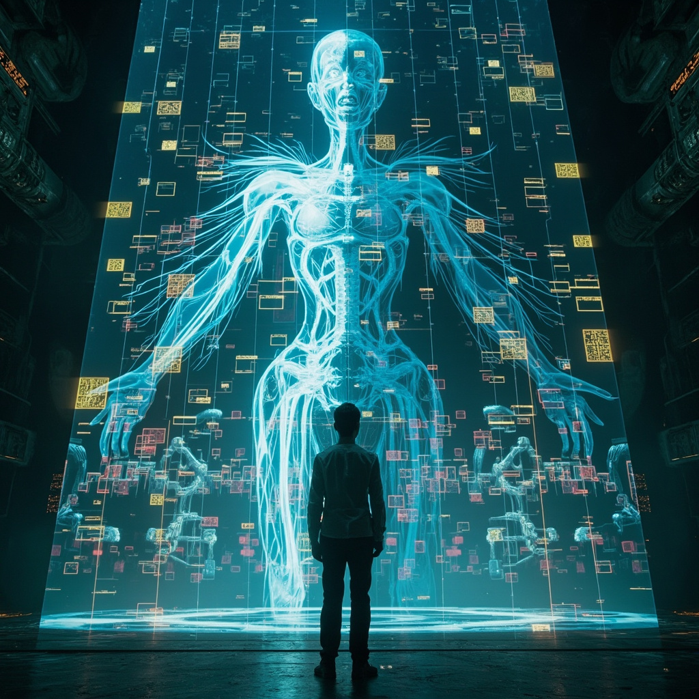
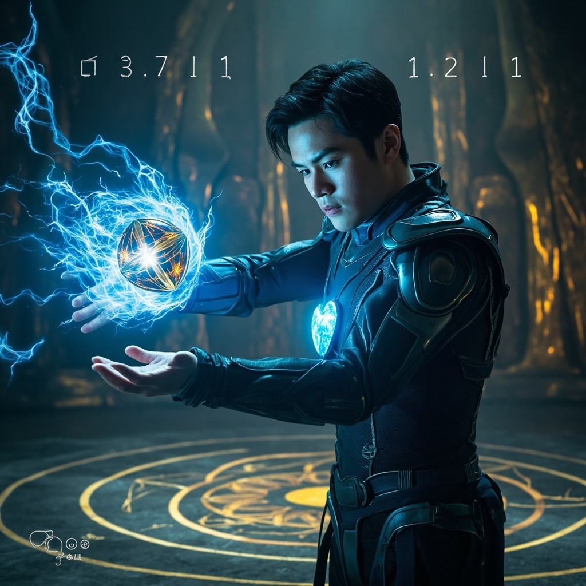
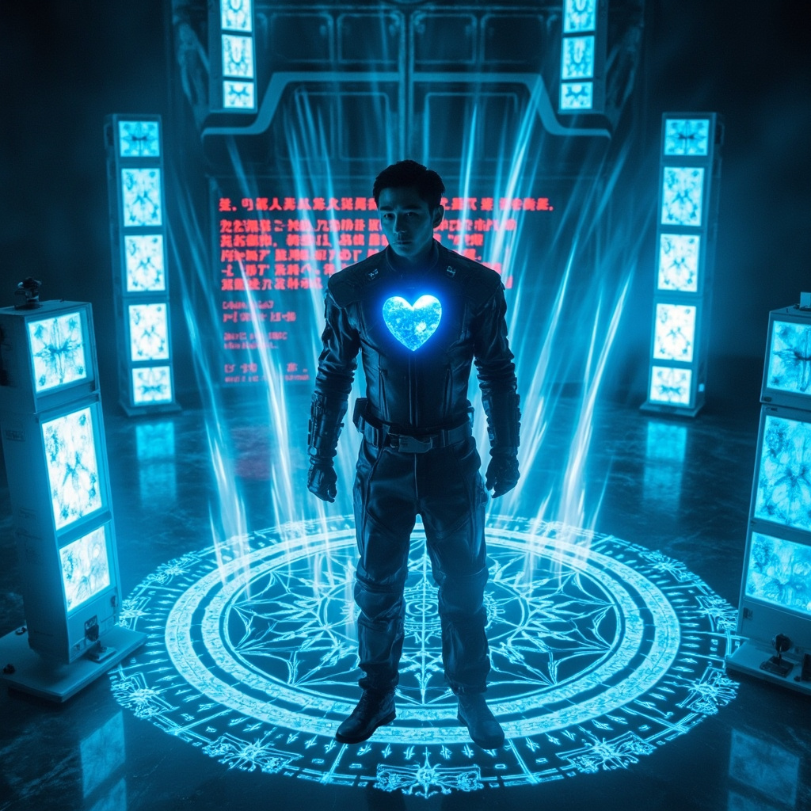

🎧 點擊播放有聲朗讀
林塵在新長安城地下三百米的修煉室中冥想時，牆壁突然浮現詭異波紋，如同水面被投入石子。靈芯系統尖銳警告：檢測到高維能量波動，空間結構正在扭曲。靈氣濃度在短短三秒內飆升百分之五百，更詭異的是，這些靈氣是從某個「裂縫」中湧出的。修煉室地板化為全息投影，複雜的幾何圖案與靈紋電路交織成直徑五米的圓形陣圖。

陣圖中央，一個拳頭大小的金屬球體緩緩浮現。表面光滑如鏡，內部卻有液體般的光流在旋轉。球體表面的流光開始變化，形成一張模糊的人臉輪廓，沒有五官只有幾何圖案，卻給人「注視」的詭異感覺。自稱「樞機」的上古機械修真文明最後守護者，直接在林塵意識層面發聲：「吾乃『樞機』，三千年來等待合適的繼承者。」

樞機向林塵揭示上古文明的第三條道路：將修真者的元神與機械載體完美融合。球體分裂成數百個小單元，重組為半機械半能量體的人形。林塵體內的靈芯系統讓他成為三千年來唯一同時符合「金丹期修為」和「科技植入體兼容性」兩個條件的候選者。這條道路可以保留修真者的意識與修為，同時獲得機械的計算力和近乎永恆的壽命。
全息影像顯示星空深處，星辰正一顆顆熄滅，彷彿被什麼東西吞噬了光芒。地球大氣層外的防護屏障已出現細微裂痕——上古文明滅亡並非因為內亂，而是因為外敵入侵。屏障正在削弱，留給文明的時間不多了。樞機的聲音帶著前所未有的緊迫感：「它們來了，比預估早了七百年。」
金屬球體懸停在林塵掌心上方，複雜的認證符文正在形成。靈芯系統倒計時：十、九、八......林塵看著全息影像中那些正在熄滅的星辰，深吸一口氣。他知道這個選擇將改變一切——接受傳承，或轉身離開。他伸出了手，決定接受機械元神之道，迎向未知的命運與迫近的災難。